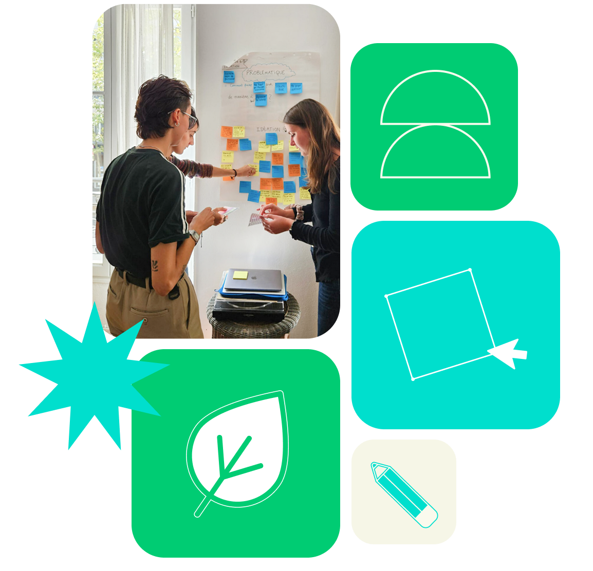
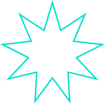
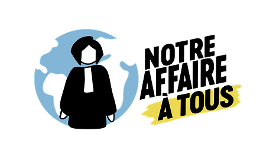

Nous vous aidons à clarifier vos enjeux en lien avec le droit de l’environnement, grâce au design

Faire connaître votre action en justice et les valeurs qu’elle porte auprès du grand public et de la presse
Rendre vos arguments plus impactants pour le juge
Mobiliser la société civile avec des formats accessibles
Vulgariser un contentieux pour vous aider à communiquer avec vos partenaires et obtenir des financements


Notre Affaire à Tous est une association créée en 2015 qui a pour objet d’utiliser le droit comme un levier stratégique de lutte contre la triple crise environnementale – climat, biodiversité, pollution. En collaboration avec plusieurs associations, elle a mené des procédures judiciaires emblématiques, telles que L'Affaire du Siècle et des procès contre TotalEnergies et BNP Paribas.
Le groupe de travail de Notre Affaire à tous consacré au procès Justice Pour Le Vivant souhaitait communiquer au grand public des informations sur ce procès via son site internet et ses réseaux sociaux.
Son objectif : informer son public sur l’état d’avancement du procès, les objectifs de la procédure d'appel et les failles du protocole de mise sur le marché des pesticides.
Le défi principal de cette mission était de rendre accessible le protocole scientifique de l’ANSES dans le cadre du procès en cours.
Nous avons mené une étude terrain (personas et interviews) pour comprendre comment aider des adultes sensibles à l’écologie à saisir les enjeux du procès Justice pour le Vivant. Après avoir défini la problématique, nous avons exploré plusieurs pistes avant de choisir un format d’infographies carrousel. Deux prototypes ont été créés, testés puis ajustés, aboutissant à deux carrousels : l’un sur le procès et son appel, l’autre sur la réforme du protocole de mise sur le marché des pesticides par l’ANSES.
Permettre à chacun de comprendre les enjeux du droit de l’environnement pour mieux s’en saisir et agir aux cotés des acteurs que l’on accompagne.
Rejoindre VERTDICT, c’est soutenir une équipe passionnée de juristes, avocats et designers qui unissent leurs savoir-faire pour décrypter les procès environnementaux et les rendre accessibles à tous, grâce à des outils clairs, visuels et pédagogiques.